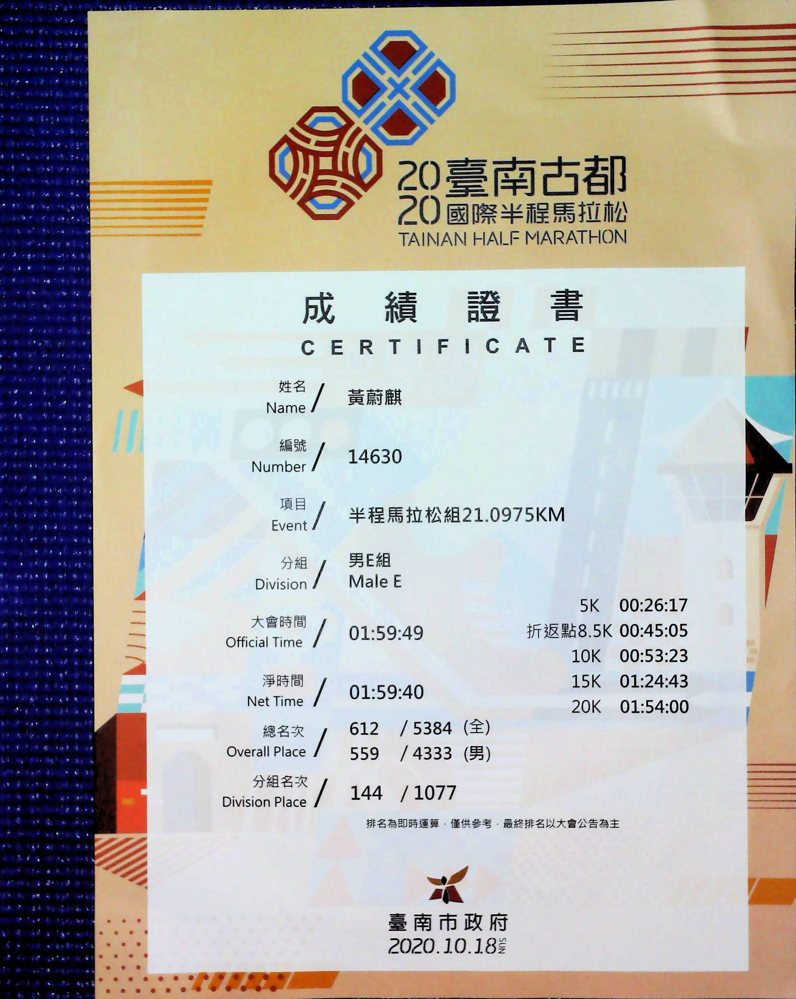

首次挑戰半馬後的身心轉變：從熱血嘗試到生活融合的跑步之旅
當時為什麼會想要去跑馬拉松呢？沒跑過之前，覺得好像跑個 5 公里、8 公里，是件很了不起的事情。那時不知道為什麼那麼熱血，就想做一件以前沒有做過的事情，想試試看自己能不能做到。因為之前騎腳踏車，騎得有點想換一下口味的感覺，所以就轉向了跑步。
開始跑馬拉松之後，才意識到一些自己以前沒有注意過的問題。其實跑馬拉松的重點不在於你的腳或肌肉，而是你的整體身體狀況。例如，要怎麼樣才不會覺得過熱，要怎麼樣早起，要怎麼樣面對自己的身體狀況 —— 從你一大早起來開始，就要規劃好什麼時候上廁所。像比賽當天，一大早 5 點半就必須將身體狀況調到最佳，才有可能把 20 公里跑完。
而且過程中，皮膚的溫度調節能力也得比一般人好。大部分的有人在比賽時，跑到一半就因為汗流太多、失溫等問題，沒能發揮出原本的實力。我個人覺得，論體力我可能不是最好的，但論調整身體狀況，我表現得還不錯。比如有一天要去跑步，我可能 3 點多就會自然醒來，先解決身體的排泄、上廁所等問題，確保在整個 20 公里的路程中，身體狀況不會出問題。這樣才不會留下遺憾，至少當天我能把自己的最佳狀況表現出來，而不是事後抱怨沒能展現最好的自己，那真的是件很可惜的事情。
那一次跑步，我其實比平常跑得還要快一點。要知道，我平常最多只跑過 10 公里，而那是我人生第一次跑完 21 公里（半馬）。整個過程沒有受傷，跑完之後精神狀態也不錯，這就算是很成功的一次體驗了。
第一次跑完半馬之後，就開始想著要進步。畢竟跑步這件事，如果每次都只抱著「志在參加，不在得獎」的心態，其實沒什麼意思。於是就開始思考：要怎麼樣才有可能拿到獎金呢？這對我來說是個很大的挑戰。從那之後，我就開始嘗試讓自己跑得更快，比如每天洗冷水澡。在堅持洗冷水澡的過程中，皮膚的溫度調節能力變得更好了，慢慢就不怕冷也不怕熱。不過我還是很討厭吹冷氣，因為冷氣會影響身體皮膚的自我調節功能，後來甚至連電風扇、冷氣都不太需要開了，因為皮膚能自己調節體溫。
除此之外，想要進步，還得先認識自己的腳。所以當時我開始偏向穿非常薄的鞋子，薄到幾乎跟襪子一樣。因為在選對鞋子之前，要先了解自己的腳 —— 當腳接觸地板時，那種觸感是什麼？只有掌握了這種感覺，才有辦法維持最佳的平衡，並運用身體的重力前進。
不過我一向不是追求速度的人，更希望跑步能融合在生活當中。像現在，我大概會著重練習「背著大背包也能跑步」—— 比如生活中上下班時，背著背包也能自由地跑動、前進。這些在身體上的改善，都是那一次馬拉松之後帶給我的寶貴收穫


Software Developer